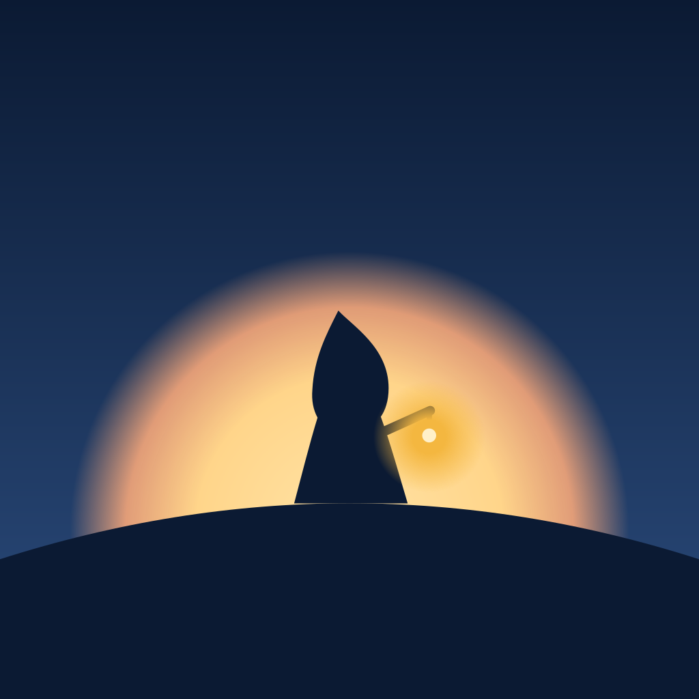

01 The myth, told without words
Every winter the sun sinks behind the fells and stays down for weeks. The islanders say it does not die. It sleeps, and a little of it is kept. Each morning a small hooded Keeper wakes in the dark with a lantern that holds one ember of the sleeping sun.
You are the Keeper. You walk the island once. At each waystone you give a little of the ember away, and the birches take its gold, the ice its blue, the sky its green. At the end you lift the lantern to the horizon and the sun answers. Spring does not come in one morning. It comes in many.

Waking. The lantern is a sleeping ember beside the cairn. One tap and it catches; the world is revealed by its light, not faded up.
The walk across sauna shore, birch wood, lake ice and harbour. The tower stands on the horizon from second three and only grows.

The minigames are rites at waystones. Each one sends light out; when it is done the light comes home and colour glazes outward from the lantern.

Dawn. The Keeper lowers the lantern as the sun crests the fell. The flame hands its job to the day, and the bedside lamp follows.
A small lantern is set on the far shore. It never goes out. The row of lanterns is the streak: every kept morning, visible, never counted against you.
02 Principles
You carry the only light
Two lights in every frame: the unlit world is cyanotype blue, and only what the lantern or sun touches has warm, true colour.
Give light, get colour
Every finished rite sends light into the world and the world keeps it. A miss only slows the glaze, it never takes colour back.
Myth, not menu
The painting is the interface. UI is quiet type set over open sky, never boxes over the art, and rites happen inside a pool of lantern light, not a panel.
Small figure, big world
Monumental scale, one focal warm point, at least 40% open sky in portrait. The Keeper is 1/6 to 1/12 of the frame.
Slow is sacred
Everything moves at breath speed (4 s in, 6 s out). Nothing flashes above 3 Hz, nothing jumps in brightness, dawn is earned and never blinding.
Every morning is kept
Lanterns on the shore never go out. The streak celebrates kept mornings and has no loss state, no guilt and no red.
Google-clean on top
Material 3 roles, one UI family, 8 dp grid, 48 dp targets, 4.5:1 text contrast. The myth lives in the art and one serif, never in ornament.
Supportive, never clinical
A gentle morning ritual, not a treatment. No scores, no diagnoses, no faces, no words in the art. Claims policy on every string.
03 Palette and roles
Night · the unlit world (cyanotype)
One hue family, five values. Night is never grey: the grade maps luminance onto this ramp, so it reads blue and calm, not dead.
#0B1A33#14294D#2B4C7E#6F8FB8#D6E2F0Light · the lantern and the sun
The only warm values at night. Warmth always means something good happened. Brightest ever painted is Glow, never white.
#F4B740#FFD58A#FFE3A6#F6A77A#1E2A55Returned colour · glazed back by rites
Order of return: yellow, then blue, then green, then dawn. Each group blooms outward from the lantern over 2.4 s.
#EFE6D2#9FD3EA#4FD1C5#8FB08A04 Typography · two OFL families, bundled
morning.
“Faith is the bird that feels the light and sings when the dawn is still dark.”
| display · serif | Rest well. |
| headline-m · serif | Your mornings |
| title-l 22/28 · 400 | This week on your shore |
| title-m 16/24 · 500 | Bedside light |
| body-l 16/24 · 400 | Slow breathing often settles you. |
| body-m 14/20 · 400 | Your lamp starts its dawn 20 minutes before you wake. |
| label-l 14/20 · 500 | Begin · Not today · Done |
| label-s 11/16 · 600 caps | Mornings kept |
05 Key frames · 390 x 844, one morning
Streak in the open sky (Duolingo pattern: count, week row, ember keep on Wednesday). The far shore holds one lantern per kept morning.
Two Dots chain plus Okami constellation. No panel: the rite plays in the sky, the only UI is five ember-drop progress marks.

Journey song plus Apple Watch Breathe. Hold to gather, release to sing a ring that wakes the ice; 4 s in, 6 s out.
Eight seconds with no UI at all. Colour crosses as a soft diagonal front from the sun; the flame drops to 35% as the day takes over.
The UI switches from the M3 night scheme to the dawn scheme at handover. Text sits on clear sky, never over the sun. One quote, one mood tap.
longest 21
Warm paper surfaces, serif headline, mood ribbon of 7 lanterns, the shore as the long-term picture. Navigation bar, 48 dp targets.
06 UI theme · Material 3, two schemes from one seed
#ffba29#5f4100#354860#00504a#232a38#72360b#7d5800#ffdea9#d2e4ff#a3f1e7#f0e7d5#ffdbc907 Shape language and illustration
Flame, hood, mote, progress mark. Round base, soft tip.
An ember drop on a bell. The only vertical that moves.
Long, low, nearly flat lines. The world is horizontal and calm.
Light moves in rings: halos, ripples, approach rings, rite frames.
Stacked round stones. Every waystone is one; it keeps a light once lit.
- No hard angles, spikes, bevels or outlines. Borders are 1 px at 12% Frost.
- Rites are framed by a circle of lantern light, not a rectangle.
- Only three verticals: the Keeper, birches, the tower (the goal).
- Forbidden: red, faces, words or runes in art, glossy 3D, neon.

Two-light painting
Matte gouache with oil pastel on toned paper. Key art paints light in. Game layers stay as the ArtBible v3 rule (local colour at middle value, no light sources) and the cyanotype grade plus lantern pool come from code, so both meet in the same look.
KEEPER the Keeper, the only character: a small, slender hooded figure, a deep, close-fitting hood like a monk's cowl that rises to a short, soft rounded point at the crown (no long or floppy tip, never a witch, wizard or gnome hat) and hides the head completely (no face, only shadow inside the hood), a long deep indigo cloak that reaches the ground with a thin band of gold stitched ornament along the hem, holding a slim wooden staff from which a small round lantern hangs; the lantern holds a warm ember-gold flame.
- Value: night frame mean luminance under 0.18; the lantern pool 0.5 to 0.7; Glow #FFE3A6 is the ceiling.
- Composition: horizon at 55 to 65% in portrait, sky at least 40%, Keeper on a third, the tower always on the right horizon.
- World: granite fells, Bronze Age coastal cairns (hiidenkiuas), birch, lake ice, sauna, harbour, the tower. Real Finnish places, no borrowed sacred motifs.
- Pipeline: art/generate.py --plan design/concept/lantern-myth/plan.json (style, keeper and every prompt used for this board).
08 Motion · M3 easing plus five signature moves
The ember catches with one overshoot, six sparks rise, one light haptic. Then the world is revealed by the light radius.
A mote leaves the lantern on an arc to open a rite; at the end the rite folds into a mote (380 ms) and arcs home.
Colour returns as a radial wave from the flame with a soft honey front at 10%. Never a visible ring outline, never a cut.
Aurora, fog and the Keeper breathe on one pacer. At dawn the flame eases to 35% while the sun crests; the UI crossfades night to dawn over 2 s.
09 Logo and app icon

The icon is the whole myth in four shapes: the night field, the dawn rising behind the fell, the Keeper, and the lantern as the single brightest pixel. The production icon is flat vector (concept_lm_icon.svg) so it holds at 29 px; the painted one is for store art and the splash.
The mark · Keeper glyph: an ember drop on a bell with one lantern dot in Ember. One colour plus the dot, works as a favicon, notification icon and bedside-lamp engraving.
Wordmark · Cormorant Garamond 500, tracking +2%, set in code. The mark sits to the left at cap height plus one third.
10 Streak, bedside light, uniqueness
Mornings kept (Duolingo, made kind)
Taken from Duolingo: the count on the home screen, the week row, a freeze, milestones, a perfect-week ring, a daily reminder. Changed: the freeze is an ember keep earned by three mornings in a week and used silently; a broken streak shows no loss screen, the number restarts at 1 and the shore keeps every lantern. Milestones 3, 7, 14, 30, 60, 100 light a landmark on the far shore (cairn fire, birch grove, the tower) instead of a badge.
Conflict to resolve: DesignSystem rule 3 and minigames.md still say “no streaks”. This concept assumes the new request wins.
The bedside light is the Keeper's lantern
Wake-up light in the same palette: dawn starts 20 minutes before the wake time and rises Ember to Honey to Glow to daylight, so the room is at dawn when the ritual begins. At handover the lamp follows the game sun.
What makes it ours
A cyanotype night instead of grey, with one gold flame: colour literally spreads from the lantern. Rites play inside a circle of lantern light, not panels. A myth of the kept ember that mirrors the slow months after TMS: light comes back in many mornings, and every one is kept on the shore. The UI itself turns from night to dawn at the handover. A Keeper glyph that is a flame and a figure at once.